Matbiips: Tutorial 3
In this tutorial, we will see how to introduce user-defined functions in the BUGS model.
Contents
Statistical model
The statistical model is defined as follows.
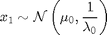
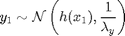
For 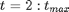
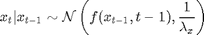
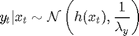
where 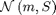 denotes the Gaussian distribution of mean 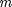 and covariance matrix 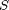, 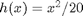, 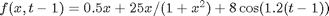, 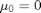, 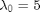, 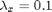 and 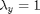.
Statistical model in BUGS language
We describe the model in BUGS language in the file 'hmm_1d_nonlin_fext.bug':
model_file = 'hmm_1d_nonlin_fext.bug'; % BUGS model filename type(model_file);
Although the nonlinear function 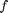 can be defined in BUGS language, we choose here to use an external user-defined function fext, which will call a Matlab function.
var x_true[t_max], x[t_max], y[t_max]
data
{
x_true[1] ~ dnorm(mean_x_init, prec_x_init)
y[1] ~ dnorm(x_true[1]^2/20, prec_y)
for (t in 2:t_max)
{
x_true[t] ~ dnorm(fext(x_true[t-1],t-1), prec_x)
y[t] ~ dnorm(x_true[t]^2/20, prec_y)
}
}
model
{
x[1] ~ dnorm(mean_x_init, prec_x_init)
y[1] ~ dnorm(x[1]^2/20, prec_y)
for (t in 2:t_max)
{
x[t] ~ dnorm(fext(x[t-1],t-1), prec_x)
y[t] ~ dnorm(x[t]^2/20, prec_y)
}
}
User-defined functions in Matlab
The BUGS model calls a function fext. In order to be able to use this function, one needs to create two functions in Matlab. The first function, called here 'f_eval.m' provides the evaluation of the function.
type('f_eval.m')
function out = f_eval(x, k) out = .5 * x + 25*x/(1+x^2) + 8*cos(1.2*k);
The second function, 'f_dim.m', provides the dimensions of the output of f_eval, possibly depending on the dimensions of the inputs.
type('f_dim.m')
function out_dim = f_dim(x_dim, k_dim) out_dim = 1;
Installation of Matbiips
- Download the latest version of Matbiips
- Unzip the archive in some folder
- Add the Matbiips folder to the Matlab search path
matbiips_path = '../../matbiips';
addpath(matbiips_path)
General settings
set(0, 'DefaultAxesFontsize', 14); set(0, 'Defaultlinelinewidth', 2); light_blue = [.7, .7, 1]; light_red = [1, .7, .7];
Set the random numbers generator seed for reproducibility
if isoctave() || verLessThan('matlab', '7.12') rand('state', 0) else rng('default') end
Load model and data
Model parameters
t_max = 20; mean_x_init = 0; prec_x_init = 1/5; prec_x = 1/10; prec_y = 1; data = struct('t_max', t_max, 'prec_x_init', prec_x_init, ... 'prec_x', prec_x, 'prec_y', prec_y, 'mean_x_init', mean_x_init);
Add the user-defined function fext
fun_bugs = 'fext'; fun_dim = 'f_dim'; fun_eval = 'f_eval'; fun_nb_inputs = 2; biips_add_function(fun_bugs, fun_nb_inputs, fun_dim, fun_eval);
* Added function 'fext'
Compile BUGS model and sample data
sample_data = true; % Boolean model = biips_model(model_file, data, 'sample_data', sample_data); % Create Biips model and sample data data = model.data;
* Parsing model in: hmm_1d_nonlin_fext.bug * Compiling data graph Declaring variables Resolving undeclared variables Allocating nodes Graph size: 143 Sampling data Reading data back into data table * Compiling model graph Declaring variables Resolving undeclared variables Allocating nodes Graph size: 144
Biips Sequential Monte Carlo
Let now use Biips to run a particle filter.
Parameters of the algorithm.
We want to monitor the variable x, and to get the filtering and smoothing particle approximations. The algorithm will use 10000 particles, stratified resampling, with a threshold of 0.5.
n_part = 10000; % Number of particles variables = {'x'}; % Variables to be monitored mn_type = 'fs'; rs_type = 'stratified'; rs_thres = 0.5; % Optional parameters
Run SMC
out_smc = biips_smc_samples(model, variables, n_part, ... 'type', mn_type, 'rs_type', rs_type, 'rs_thres', rs_thres);
* Assigning node samplers * Running SMC forward sampler with 10000 particles |--------------------------------------------------| 100% |**************************************************| 20 iterations in 5.38 s
Diagnosis on the algorithm.
diag_smc = biips_diagnosis(out_smc);
* Diagnosis of variable: x[1:20] Filtering: GOOD Smoothing: GOOD
Summary statistics
summ_smc = biips_summary(out_smc, 'probs', [.025, .975]);
Plot Filtering estimates
figure('name', 'SMC: Filtering estimates') x_f_mean = summ_smc.x.f.mean; x_f_quant = summ_smc.x.f.quant; h = fill([1:t_max, t_max:-1:1], [x_f_quant{1}; flipud(x_f_quant{2})], 0); set(h, 'edgecolor', 'none', 'facecolor', light_blue) hold on plot(1:t_max, x_f_mean, 'linewidth', 3) plot(1:t_max, data.x_true, 'g') xlabel('Time') ylabel('x') legend({'95% credible interval', 'Filtering mean estimate', 'True value'}) legend boxoff box off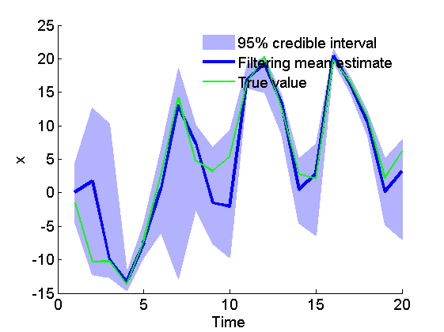
Plot Smoothing estimates
figure('name', 'SMC: Smoothing estimates') x_s_mean = summ_smc.x.s.mean; x_s_quant = summ_smc.x.s.quant; h = fill([1:t_max, t_max:-1:1], [x_s_quant{1}; flipud(x_s_quant{2})], 0); set(h, 'edgecolor', 'none', 'facecolor', light_red) hold on plot(1:t_max, x_s_mean, 'r', 'linewidth', 3) plot(1:t_max, data.x_true, 'g') xlabel('Time') ylabel('x') legend({'95% credible interval', 'Smoothing mean estimate', 'True value'}) legend boxoff box off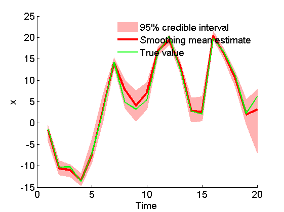
Marginal filtering and smoothing densities
figure('name', 'SMC: Marginal posteriors') kde_smc = biips_density(out_smc); time_index = [5, 10, 15]; for k=1:numel(time_index) tk = time_index(k); subplot(2, 2, k) plot(kde_smc.x.f(tk).x, kde_smc.x.f(tk).f); hold on plot(kde_smc.x.s(tk).x, kde_smc.x.s(tk).f, 'r'); plot(data.x_true(tk), 0, '*g'); xlabel(['x_{', num2str(tk), '}']); ylabel('Posterior density'); title(['t=', num2str(tk)]); box off end h = legend({'Filtering density', 'Smoothing density', 'True value'}); set(h, 'position', [0.7, 0.25, .1, .1]) legend boxoff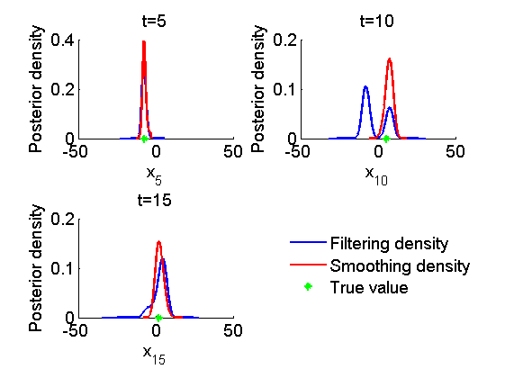
Clear model
biips_clear()